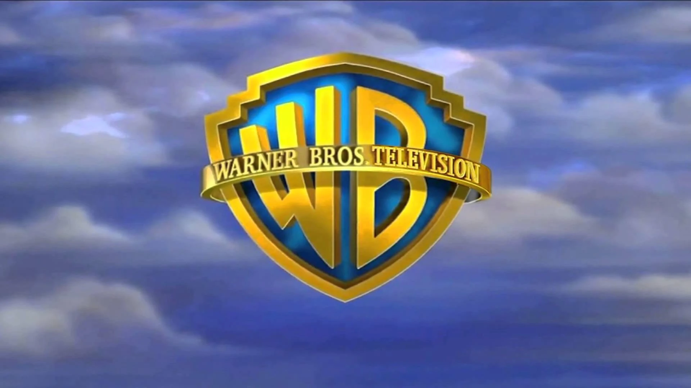
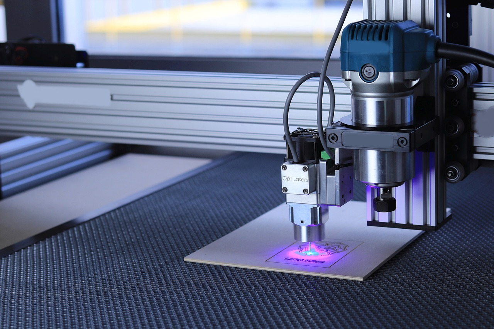
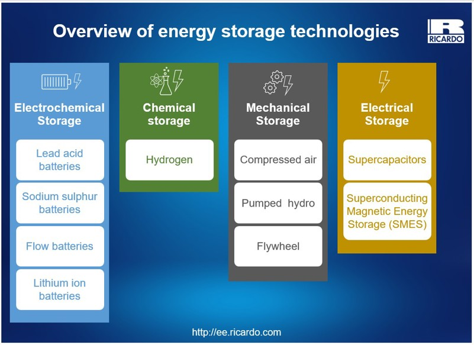
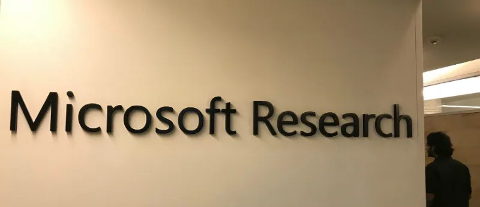

Conceptual Timeline
2016
Initial Research Begins
2018
First Successful Data Storage
2019
Warner Bros. Partnership
2020+
p>Ongoing Research & DevelopmentFuture Developments & Research Status
Project Silica represents the cutting edge of data storage research. While still in the development phase, it shows tremendous promise for revolutionizing how we preserve information for future generations.
Current Research Status
Proof of Concept
Project Silica is currently a Microsoft Research project, not yet a commercial product. The technology has been successfully demonstrated through various proofs of concept, showing that the fundamental principles work effectively.

Warner Bros. Partnership
Microsoft has been working with Warner Bros. to test this technology. In a famous demonstration, they successfully stored and retrieved the entire 1978 Superman movie on a piece of Project Silica glass, validating the technology's practical application for media preservation.
Technical Milestones Achieved
- • Successful writing and reading of data in quartz glass
- • Development of femtosecond laser writing technology
- • Creation of machine learning algorithms for data retrieval
- • Demonstration of extreme durability and longevity
- • Validation of multi-terabyte storage capacity
Project Silica Gallery
Explore the visual journey of Project Silica through our collection of images and concepts that showcase this revolutionary data storage technology.

Quartz Glass Storage Medium
The transparent quartz glass discs used in Project Silica for permanent data storage.

Femtosecond Laser Writing
Ultrafast lasers create microscopic voxels inside the glass to store data in 3D.
AI-Powered Reading
Machine learning algorithms decode data patterns using polarized light microscopy.

Technology Comparison
Project Silica compared to traditional HDD, SSD, and tape storage solutions.
Library of the Future
Concept art showing how data centers might evolve with glass-based storage.

Research and Development
The Microsoft Research laboratory where Project Silica is being developed.
Technology Demonstration
Below is a conceptual animation showing how data is written to and read from the quartz glass medium:
Process Flow: Laser Writing → Data Storage → AI Reading
Future Development Roadmap
Increasing Storage Density
Researchers are working on increasing the amount of data that can be stored on each glass platter. The goal is to move from terabytes to petabytes per disc, making the technology competitive with current high-density storage solutions.
Improving Write and Read Speeds
Current limitations include relatively slow writing and reading speeds compared to traditional storage. Future developments aim to significantly accelerate both processes while maintaining data integrity.
Cost Reduction
The femtosecond laser technology used for writing is currently expensive. Research focuses on making the technology more cost-effective for widespread adoption.
Standardization and Compatibility
Developing industry standards for the technology to ensure compatibility across different systems and future-proof the stored data.
Long-Term Vision
The "Library of the Future"
Imagine data centers replaced by "libraries" containing rows of glass slabs instead of server racks. These facilities would require no cooling, minimal security, and virtually no maintenance while preserving data for millennia.
Global Knowledge Preservation
Project Silica could enable the creation of permanent archives of human knowledge, culture, and scientific discoveries that would survive any potential technological collapse or natural disaster.
Space Exploration
The technology's durability makes it ideal for long-duration space missions and preserving data in extreme environments beyond Earth.
Challenges and Research Areas
Technical Challenges
- • Scaling the technology for mass production
- • Improving error correction for long-term integrity
- • Developing efficient indexing and retrieval systems
- • Ensuring backward compatibility with future technologies
Economic Considerations
- • Reducing the cost of laser writing systems
- • Developing business models for archival storage services
- • Calculating total cost of ownership compared to traditional solutions
- • Addressing the initial investment barrier
Implementation Hurdles
- • Integrating with existing data management systems
- • Developing migration paths from current storage
- • Creating certification standards for long-term integrity
- • Addressing legal and regulatory requirements
Industry Collaboration
Microsoft Research continues to collaborate with various industry partners, research institutions, and potential early adopters to refine the technology and explore practical applications. The success of Project Silica will depend on building an ecosystem of companies and organizations committed to long-term data preservation.
Potential Early Adopters
- National archives and libraries
- Major film studios and media companies
- Scientific research institutions
- Government agencies with long-term record keeping requirements
- Financial institutions with regulatory compliance needs